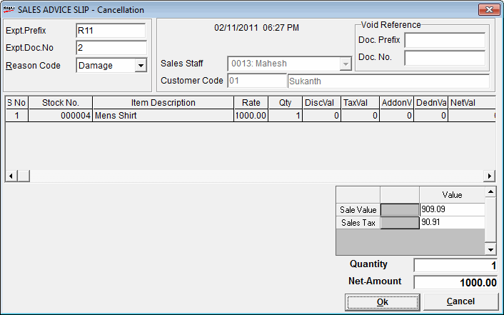

Sales advice slips generated earlier can be cancelled (voided) through this option. When you cancel a sales advice slip, a void sales advice slip record is created in the database. This void sales advice slip cannot be recalled during billing.
The SALES ADVICE SLIP window is displayed.

To delete a Sales Advice Slip the Expected Transaction prefix and the Expected Transaction Document Number are to be entered, and the reason for cancellation has to be selected.
The current Shoper date is displayed, which is considered as the cancellation date of the Sales Advice Slip.
Expt. Prefix: Enter the expected transaction prefix for the sales advice slip to be cancelled.
Expt. Doc. No.: Enter the number of the sales advice slip to be cancelled.
Reason Code: Select the appropriate reason for voiding the sales advice slip
Sales Staff:The code and name of the sales staff who entered the cancellation details is displayed
Customer Code: The code and the name of the customer is displayed.
The stock item details in the sales advice slip are displayed in the grid: S No., Stock No., Item Description, Rate, Qty, DiscVal, TaxVal, AddonVal, DednVal and NetVal are displayed.
Void Reference
Doc. Prefix: Enter the document prefix
Doc. No: Enter the document number
Sale Value: The total sales value of the cancelled sales advice slip transaction is displayed.
Sales Tax: The total value of the sales tax charged is displayed.
Quantity: The quantity of the cancelled sales advice slip is displayed.
Net-Amount: The net sales value of the cancelled sales advice slip is displayed.